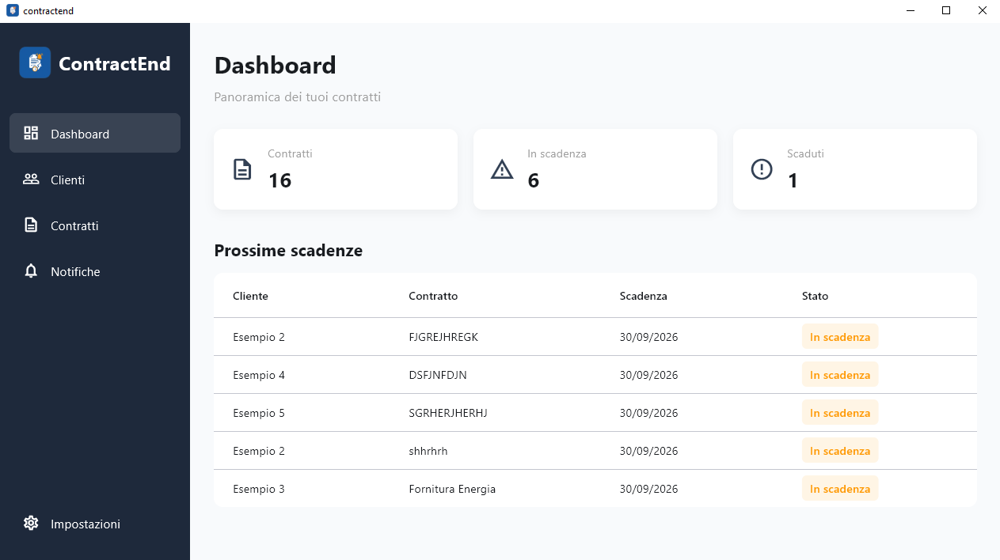

ContractEnd
Gestione clienti e contratti
Applicazione desktop per Windows progettata per gestire clienti, contratti, documenti e relative scadenze in modo semplice e organizzato.

Il progetto
Cos'è ContractEnd?
ContractEnd è un'applicazione desktop sviluppata con Flutter per Windows, pensata per semplificare la gestione dei clienti e dei relativi contratti.
L'applicazione permette di associare i contratti ai clienti, archiviare i documenti PDF, controllare le scadenze e ricevere notifiche prima della scadenza.
Gestione locale
I dati vengono gestiti localmente tramite SQLite, mentre i documenti vengono archiviati sul computer dell'utente.
L'applicazione è pensata per essere utilizzata direttamente su Windows senza richiedere un'infrastruttura server.
Funzionalità
Clienti
Creazione, modifica e gestione dei clienti presenti nell'applicazione.
Contratti
Gestione dei contratti, delle informazioni contrattuali e dei documenti associati.
Scadenze
Visualizzazione dello stato dei contratti e individuazione delle prossime scadenze.
Notifiche
Notifiche desktop per ricordare le scadenze imminenti dei contratti.
Ricerca
Ricerca e filtraggio di clienti e contratti per trovare rapidamente le informazioni.
Gemini AI
Estrazione automatica delle informazioni contrattuali tramite intelligenza artificiale.
Tecnologie
Ultima Build
ContractEnd per Windows
Scarica l'ultima versione compilata dell'applicazione per Windows.
Scarica ContractEndCodice sorgente
Il codice sorgente del progetto è disponibile pubblicamente su GitHub.
Visualizza su GitHub